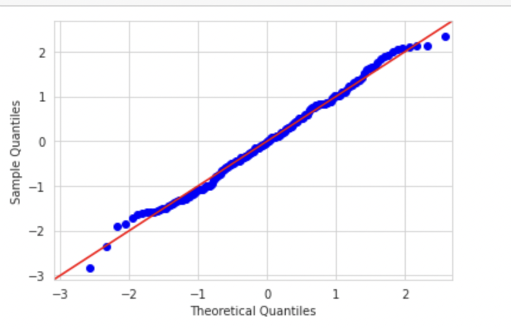
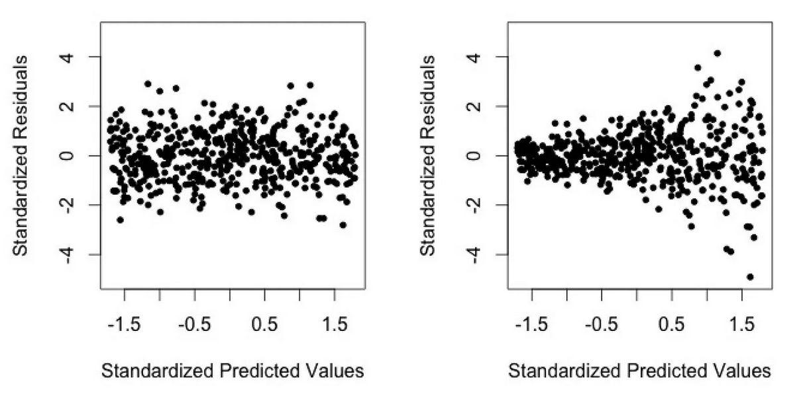

Επανάληψη
2025-12-18
Γραμμική παλινδρόμηση
Τα δεδομένα
Σενάριο:
Μελετάμε τους παράγοντες που επηρεάζουν το λεξιλόγιο ενός παιδιού (κλίμακα 0–100). Οι μεταβλητές που μας ενδιαφέρουν είναι:
- Ηλικία σε μήνες (
Age_Months- Συνεχής) - Ώρες Ανάγνωσης (
Hours_Reading- Συνεχής: ώρες που διαβάζουν οι γονείς στο παιδί ανά εβδομάδα) - Τύπος Σχολείου (
Preschool_Type- Κατηγορική: Ιδιωτικό/Δημόσιο)
Απλή γραμμική παλινδρόμηση
Model Coefficients
| Predictor | Estimate | SE | t | p |
|---|---|---|---|---|
| Intercept | 20.50 | 3.10 | 6.10 | < .001 |
| Age_Months | 0.60 | 0.08 | 7.50 | < .001 |
Ερωτήσεις:
- Επηρεάζει η ηλικία το λεξιλόγιο;
- Ποια είναι η μαθηματική εξίσωση του μοντέλου;
- Ποια είναι ερμηνεία κάθε συντελεστή (Estimate);
- Σχεδιαστε την γραμμή.
Πολλαπλή γραμμική παλινδρόμηση
Model Coefficients - Vocabulary Score
| Predictor | Estimate | SE | t | p |
|---|---|---|---|---|
| Intercept | 15.40 | 2.10 | 7.33 | < .001 |
| Age_Months | 0.50 | 0.10 | 5.00 | < .001 |
| Hours_Reading | 1.20 | 0.40 | 3.00 | 0.003 |
| Preschool_Type (Private - Public) | 0.80 | 1.50 | 0.53 | 0.596 |
Πολλαπλή γραμμική παλινδρόμηση
Ερωτήσεις:
- Τι σημαίνει το αποτέλεσμα για το
Estimateτης μεταβλητήςHours_Reading; - Επηρεάζει ο τύπος σχολείου το λεξιλόγιο ενός παιδιού;
- Ποιοι είναι οι έλεγχοι που περιγράφονται σε αυτόν τον πίνακα;
- Ποια είναι τα αποτελέσματα αυτών των ελέγχων;
Επίδοση της πολλαπλής γραμμικής παλινδρόμησης
Model Fit Measures
| Model | R | R² | Adjusted R² | F | df1 | df2 | p |
|---|---|---|---|---|---|---|---|
| 1 | 0.65 | 0.422 | 0.415 | 24.5 | 3 | 96 | < .001 |
Ερωτήσεις:
- Τι σημαίνει \(R^2=0.422\) και τι σημαίνει Adjusted \(R^2 = 0.415\);
- Αν προσθέσουμε μία άσχετη μεταβλητή, π.χ. το χρώμα της τσάντας, τι θα κάνει το \(R^2\) και τι το \(\text{Adjusted} R^2\);
- Τι ελέγχεται στις στήλες F, df1, df2, p;
- Ποιο είναι το συμπέρασμα του ελέγχου;
Σύγκριση μοντέλων
| Model | Predictors | R | R² | F (Change) | p (Change) |
|---|---|---|---|---|---|
| 1 | Age | 0.55 | 0.302 | - | - |
| 2 | Age + Reading | 0.65 | 0.422 | 18.4 | < .001 |
Ερωτήσεις:
- Αξίζει να προσθέσουμε και τις ώρες διαβάσματος, αν έχουμε ήδη στο μοντέλο την ηλικία;
- Ποιο είναι το τεστ που πραγματοποιείται στον πίνακα;
Πρόβλεψη για νέο παιδί
Ποια είναι η πρόβλεψη για το λεξιλογικό σκορ για ένα νέο παιδί με:
- Ηλικία: 40 μηνών
- Ώρες ανάγνωσης: 5 ώρες
- Σχολείο: Δημόσιο
Προϋποθέσεις
Προϋποθέσεις
Λογιστική παλινδρόμηση
Τα δεδομένα
Σενάριο:
Προβλέπουμε αν ένα παιδί είναι “Έτοιμο για το Σχολείο” (Ναι/Όχι).
Μεταβλητές: - Κοινωνικές δεξιότητες (0-10), - Παρουσίες (πολλές / λίγες).
Έλεγχος Μοντέλου
Πίνακας Omnibus Likelihood Ratio Tests:
| Test | \(\chi^2\) Value | df | p |
|---|---|---|---|
| Model vs Null | 15.42 | 2 | < .001 |
Ερωτήσεις:
- Τι ελέγχεται στον πίνακα;
- Ποιο είναι το συμπέρασμα του ελέγχου;;
Αποτελέσματα μοντέλου
| Predictor | Estimate | p | Odds Ratio |
|---|---|---|---|
| Intercept | -2.50 | 0.002 | 0.082 |
| Social_Skills | 0.40 | 0.008 | X.XX |
| Attendance (High - Low) | 1.10 | 0.028 | 3.00 |
Αποτελέσματα μοντέλου
Ερωτήσεις:
- Επηρεάζει και με ποιον τρόπο η ηλικία την πιθανότητα ετοιμότητας για το σχολείο;
- Πώς ερμηνεύεται ο συντελεστής 1.10 για τις παρουσίες;
- Ποιο είναι το odds ratio των κοινωνικών δεξιοτήτων;
Πρόβλεψη για ένα νέο παιδί
Ποια είναι η πιθανότητα να είναι έτοιμο ένα παιδί με:
- Κοινωνικές δεξιότητες: 8
- Παρουσίες: Χαμηλές
Πολυωνυμική λογιστική παλινδρόμηση
Τα δεδομένα
Σενάριο:
Ποια γωνιά παιχνιδιού προτιμά το παιδί κατά την ελεύθερη ώρα;
Εξαρτημένη μεταβλητή: Outcome με τιμές Τουβλάκια, Ζωγραφική, Ανάγνωση.
Μεταβλητές:
- Φύλο (
Gender, κατηγορική: αγόρι/κορίτσι) - Λεπτή κινητικότητα (
Fine_Motor, Συνεχής: 0-10) - Επίπεδο δραστηριότητας: (
Activity_Level, 0-10)
Συνολικός έλεγχος
Model Fit Measures
| Model | Deviance (-2LL) | AIC | \(\chi^2\) | df | p |
|---|---|---|---|---|---|
| Null | 580.4 | 584.4 | - | - | - |
| Model | 490.1 | 512.1 | 90.3 | 6 | < .001 |
Ερωτήσεις:
- Ποιο είναι το τεστ που περιγράφεται στον πίνακα;
- Ποιο είναι το συμπέρασμα;
Ερμηνεία συντελεστών
| Comparison | Predictor | Estimate | SE | p | Odds Ratio |
|---|---|---|---|---|---|
| Ζωγραφική vs Τουβλάκια | |||||
| Intercept | -1.20 | 0.50 | .016 | 0.30 | |
| Gender (Κορίτσι - Αγόρι) | 1.10 | 0.30 | <.001 | 3.00 | |
| Fine_Motor | 0.40 | 0.10 | <.001 | 1.49 | |
| Activity_Level | -0.10 | 0.10 | .317 | 0.90 | |
| Ανάγνωση vs Τουβλάκια | |||||
| Intercept | 0.50 | 0.60 | .405 | 1.64 | |
| Gender (Κορίτσι - Αγόρι) | 0.40 | 0.35 | .253 | 1.49 | |
| Fine_Motor | 0.05 | 0.12 | .670 | 1.05 | |
| Activity_Level | -0.80 | 0.15 | <.001 | 0.45 |
Ερμηνεία συντελεστών
Ερωτήσεις:
- Ζωγραφική vs Τουβλάκια (Κινητικότητα):
- Κοιτάξτε το Fine_Motor (OR = 1.49). Τι σημαίνει;
- Ανάγνωση vs Τουβλάκια (Δραστηριότητα):
- Κοιτάξτε το Activity_Level (OR = 0.45, p < .001). Τι σημαίνει το OR < 1;
Πρόβλεψη νέου μαθητή
Ποιες είναι οι πιθανότητες ένας νέος μαθητής να παίξει με τουβλάκια, να κάνει ζωγραφική, να διαβάσει βιβλίο όταν έχει:
- Φύλο: Αγόρι
- Λεπτή κινητικότητα: 3
- Δραστηριότητα: 9
Τι θα επιλέξει μάλλον το παιδί;
Διατάξιμη λογιστική παλινδρόμηση
Τα δεδομένα
Σενάριο:
Σε μια έρευνα ικανοποίησης προσωπικού, ρωτήσαμε νηπιαγωγούς: “Πόσο ικανοποιημένοι είστε από την τωρινή σας εργασία;”
Οι απαντήσεις δόθηκαν κλίμακα Likert 3 σημείων: Δυσαρεστημένος, Ουδέτερος, Ικανοποιημένος
Τρεις μεταβλητές:
- Έτη Προϋπηρεσίας (Years_Exp - Συνεχής).
- Υποστήριξη Διεύθυνσης (Admin_Support - Συνεχής: Κλίμακα 0-10).
- Μέγεθος Τάξης (Class_Size - Κατηγορική: Ολιγομελής / Πολυμελής).
Ερμηνεία συντελεστών
| Predictor | Estimate | SE | p | Odds Ratio |
|---|---|---|---|---|
| Years_Exp | 0.05 | 0.02 | 0.045 | 1.05 |
| Admin_Support (0-10) | 0.60 | 0.10 | < .001 | 1.82 |
| Class_Size (Πολυμελές - Ολιγομελές) | -1.20 | 0.30 | < .001 | 0.30 |
Ερμηνεία συντελεστών
Ερωτήσεις:
- Τι σημαίνει το OR ίσο με 1.82 για τη στήριξη από τη διεύθυνση;
- Πώς νιώθουν οι εκπαιδευτικοί για τα πολυμελή τμήματα;
Πρόβλεψη για δύο νηπιαγωγούς
Ο πίνακας με τα κατώφλια είναι:
| Threshold | Estimate | SE | |
|---|---|---|---|
| Δυσαρεστημένος | Ουδέτερος | -2.50 | 0.40 |
| Ουδέτερος | Ικανοποιημένος | 3.00 | 0.45 |
Πρόβλεψη για δύο νηπιαγωγούς
Συγκρίνουμε τη νηπιαγωγό Α με τη νηπιαγωγό Β. Η νηπιαγωγός Α έχει:
- Προϋπηρεσία: 2 έτη
- Μέγεθος τάξης: Ολιγομελής
- Υποστήριξη διεύθυνσης: 9
Πρόβλεψη για δύο νηπιαγωγούς
Η νηπιαγωγός Β έχει:
- Προϋπηρεσία: 20 έτη
- Μέγεθος τάξης: Πολυμελής
- Υποστήριξη διεύθυνσης: 3
Ποια νηπιαγωγός είναι πιθανότερο να δηλώσει Ικανοποιημένη;

Ποσοτικές Μέθοδοι – 12ο μάθημα